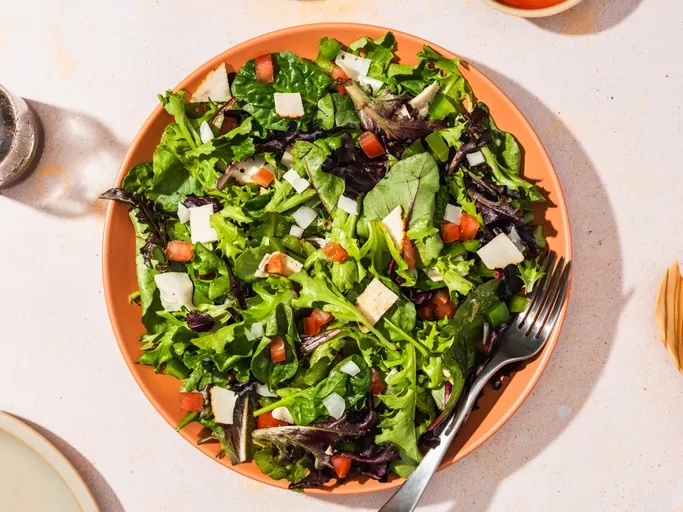

Back to Homepage
Salad Recipe

Description
This fresh salad is a perfect side dish or light meal. It's packed with colorful vegetables and a tangy dressing that brings everything together.
Ingredients
- 4 cups mixed salad greens (e.g., spinach, arugula, romaine)
- 1 cup cherry tomatoes, halved
- 1 cucumber, sliced
- 1 bell pepper, diced
- 1/2 red onion, thinly sliced
- 1/2 cup feta cheese, crumbled
- 1/4 cup olives (optional)
- 1/4 cup olive oil
- 2 tablespoons balsamic vinegar
- Salt and pepper to taste
- Fresh herbs (e.g., basil or parsley) for garnish
Instructions
- In a large bowl, combine the mixed salad greens, cherry tomatoes, cucumber, bell pepper, and red onion.
- In a small bowl, whisk together the olive oil, balsamic vinegar, salt, and pepper to create the dressing.
- Drizzle the dressing over the salad and toss gently to combine.
- Add the crumbled feta cheese and olives (if using) on top of the salad.
- Garnish with fresh herbs for added flavor.
- Serve immediately or refrigerate for up to 30 minutes before serving to allow flavors to meld.
- Enjoy your refreshing salad!